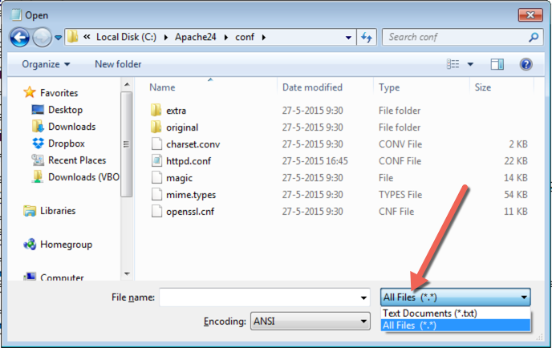
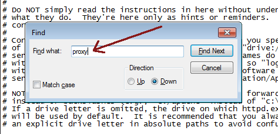
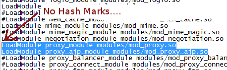
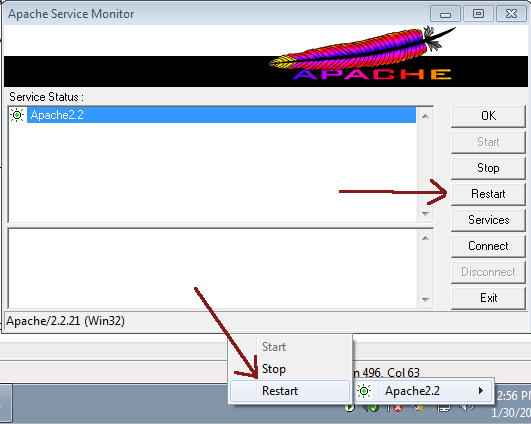

Apache on Windows
Install mod_cfml to Apache on Windows
The following steps cover all the steps necessary for install the mod_cfml module into Apache on a Windows System. The steps are intended to be thorough, so you may not need to take each step on your own system. For example, you may already have Apache and some of the required modules installed on your system. Feel free to skip those steps as needed.
Installing Apache
If you have not yet installed Apache on your system, please make sure to install Apache version 2.4.
Installing Apache on Windows is as simple as downloading and extracting a zip file. The Apache Software Foundation does not host binary distributions themselves, so they can be downloaded from eg. ApacheHaus or Apache Lounge.
For this tutorial, we'll download httpd-2.4.12-win64-VC11.zip from Apache Lounge. The zip file contains 1 directory "Apache24", and a ReadMe.txt. Following the install instructions in the ReadMe.txt file, you will end up with Apache 2.4 being installed in C:/Apache24/
Configuring mod_proxy
Mod_proxy is a connector, that is, it passes requests off to Tomcat for processing, thus "connecting" Apache to Tomcat. Both mod_proxy and mod_jk have been tested with mod_cfml and both work great. If you already have mod_proxy or mod_jk installed, then you may skip this step. However, since you do need one or the other installed, we will cover installing mod_proxy quickly here. This is not intended to be documentation on mod_proxy, but enough to get you up and running. Full mod_proxy documentation is available on the Apache Web Site.
mod_proxy and mod_proxy_ajp are part of the default Apache Lounge distributions, however, they are disabled by default. So, we will need to edit the Apache configuration to enable mod_proxy.
In this documentation, we're going to be using "notepad" to edit our config files. In order for our user to have permission to edit the files we need to edit, we will need to open up "notepad" as an administrator. In Windows7 and Windows Server, you can open programs as the Administrator user by right-clicking on them and selecting "Run as Administrator", like in this Windows7 screenshot (you may be prompted to enter the administrator password):

Now that we have Notepad open as an Administrator, we go to File->Open, and navigate to the following:
C:\Apache24\conf\httpd.confIMPORTANT: We will use this method of opening programs as the administrator user repeatedly during this tutorial.
You may need to select the "All Files" option from the drop-down menu in order to see the httpd.conf file that you need to select.

The first thing that we need to do is enable mod_proxy and mod_proxy_ajp. When the file is open in Notepad, hit CTRL+F to open up the find window. In the find window, type in "proxy":

Hit the "Find Next" button, and you should be taken to the very line that we need to uncomment. See the hash tags ("#") that are in front of the proxy lines? Those need to be removed in order to uncomment them. You need to uncomment mod_proxy and mod_proxy_ajp. Like so:

Now that mod_proxy and mod_proxy_ajp have been uncommented, add the following to the very bottom of the file:
<Proxy *>
# When using Apache 2.2, use the following line (without the "# ")
# Allow from 127.0.0.1
# When using Apache 2.4, use this line (without the "# ")
# Require ip 127.0.0.1
</Proxy>
ProxyPreserveHost On
ProxyPassMatch ^/(.+\.cf[cm])(/.*)?$ ajp://localhost:8009/$1$2The config above is designed to send any request that Apache gets that has a ".cfm" or ".cfc" in it to be passed off to Tomcat. This configuration is obviously intended for CFML processing engines, but you can also use a statement similar to the above to pass ".jsp" files off to Tomcat, and mod_cfml will create contexts for those sites as well. Feel free to experiment here however you need to.
Now restart Apache so your changes take effect. If you installed the ApacheMonitor.exe, there should be a little pink feather in your task-bar. left-click it (not right-click) hover over "Apache 2.4", and select "Restart". Right-clicking will enable you to bring up the Apache monitor window, where you can also restart Apache if you want. You will be prompted for admin rights if you're doing this as a non-administrator user.
mod_cfml.so prerequisites
Be sure that you have installed the Microsoft C++ 2015-2019: Win64 VC_redist.x64.exe, Win32 VC_redist.x86.exe
Installing mod_cfml.so
Depending on the architecture of your Apache install, you either need to install the 64-bit or 32-bit module:
Download Windows Apache2.4 64bit mod_cfml.so Download Windows Apache2.4 32bit mod_cfml.so
Download Windows Apache2.2 64bit mod_cfml.so Download Windows Apache2.2 32bit mod_cfml.so
Move the downloaded file to C:/Apache24/modules/ (or C:/Apache22/modules/)
Now, open up httpd.conf like we did before, and add the following to the end of the file:
LoadModule modcfml_module modules/mod_cfml.so
CFMLHandlers ".cfm .cfc .cfml"
ModCFML_SharedKey "secret key also set in the Tomcat valve config"
# Optional, all for logging and debugging:
# LogHeaders true
# LogHandlers true
# LogAliases true
# VDirHeader falseSave the file, and then restart Apache.
You are now all done now on the Apache side! Congrats, and continue to the Tomcat instructions.